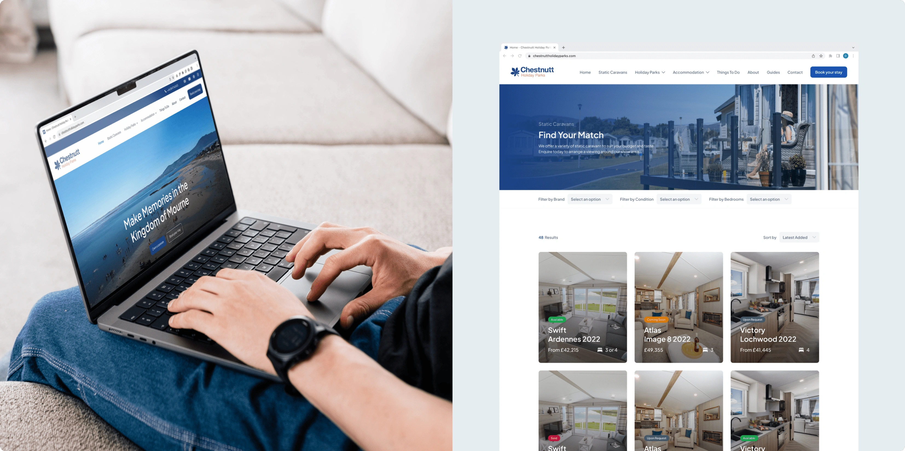
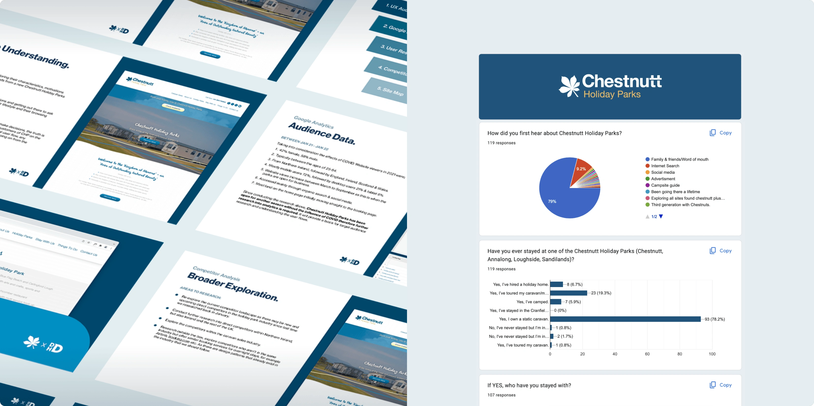
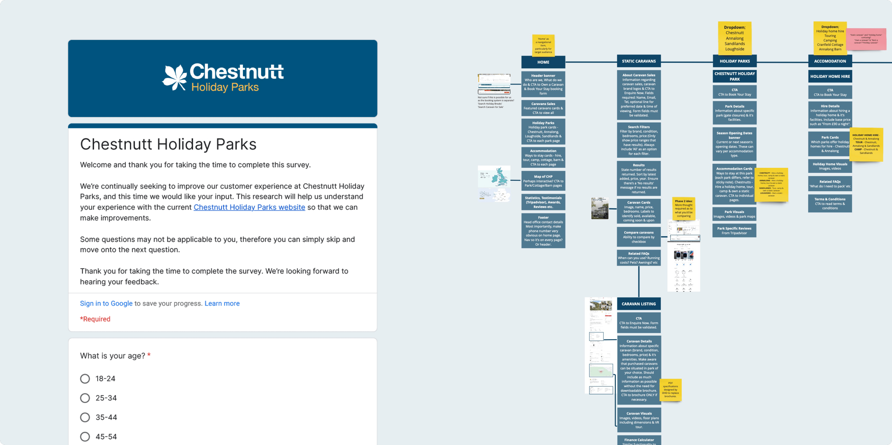
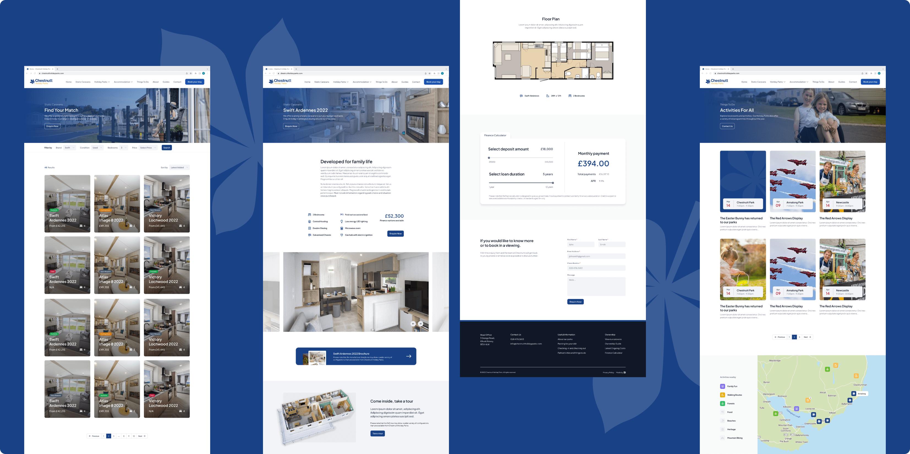

Launched 2023
Chestnutt Holiday Parks
A multi-award winning, family owned Holiday Home business, nestled at the foot of the Mourne Mountains ⛰️
Visit website
A multi-award winning, family owned Holiday Home business, nestled at the foot of the Mourne Mountains ⛰️
Visit websiteChestnutt Holiday Parks exist within the dramatic mountains, rolling farmland and golden coastline of the Mourne area. A family business that has been operating for over four generations.
Role: UX Researcher & supporting UI Designer working collaboratively with another UI Designer at DHD
Timeframe: 6 months
Deliverable: Website redesign to breathe new life into an outdated interface and eliminate user flow bottlenecks

As a retainer client of DHD, we have created various assets for Chestnutt Holiday Parks over the years, from captivating videography to an online presence and social media marketing.
At the beginning of 2022, we proposed a comprehensive overhaul of their existing website. Our aim was to breathe new life into their outdated interface and enhance the overall user journey. My pivotal role was to conduct UX research, a process that uncovered invaluable insights to guide our design decisions.

To initiate this process, I completed a comprehensive UX audit, dissecting the existing website to uncover pain points and opportunities for enhancement.
By delving into Google Analytics data, I identified the typical user journey. This revealed drop-off points where users were most likely confused or frustrated, leading to an opportunity to simplify navigation.
I conducted a user survey, tapping into the minds of Chestnutt's audience to grasp their frustrations and desires. After receiving a successful 119 responses, I collated a feature list to cover the functionalities that were most important to these users. This included; caravan selling price, pitch location, notifications for season openings and more. The survey also provided a catalogue of UK & Ireland-based competitors to initiate a competitor analysis.
The most influential part of this research was performing usability tests. Conducted with four participants, each user navigated the existing website, completing various tasks that highlighted bottlenecks hindering the user flow. This process unveiled user struggles but also shed light on the underlying reasons, laying the foundation for effective problem-solving. From problems as small as not being able to navigate back to the home page, to working their way through the hire booking system with difficulty. It also highlighted that the website lacked essential information. Most participants, although current customers of Chestnutt Holiday Parks, were not aware of all the ways to stay within the park. Whether that be owning a caravan, hiring a caravan, touring your own caravan or camping on-site.
Armed with a wealth of insights from my research, I was able to develop an extremely detailed site map that guided the subsequent design phase.

Although the design of the new Chestnutt Holiday Parks website was led by another designer within DHD, I contributed by designing the interface of its internal pages. Together, we created a visually beautiful website suited to the target audience, that eliminates the user flow bottlenecks I had unveiled. From seamlessly navigating the offerings of Chestnutt Holiday Parks to streamlining the booking process, every aspect of the user journey received meticulous attention.
Since its launch, our dedication to maintaining this website persists. I want to ensure our design continually exceeds users' expectations by conducting further usability tests. With the input of valuable UX research, we believe Chestnutt Holiday Parks has seen a significant improvement in its digital presence. Showcased by a 4.17% increase in overall new users and a 288% increase in direct traffic to the website.


Fresh brand identities and website redesigns for three divisions within The Clearbox Group 📣
Read project
Northern Ireland’s modern furniture specialists, a luxury furniture store 🛋️
Read project
With a remarkable 170 years of experience, the experts in construction and civil engineering 🏗️
Read project
Replace 10+ travel apps with Hidden, connecting you with locals & past visitors to find the hidden gems of your next adventure 🗺️️
Read project
Product design in healthcare technology, shaping a clinical lab web app used by scientists worldwide 🩺
Read project